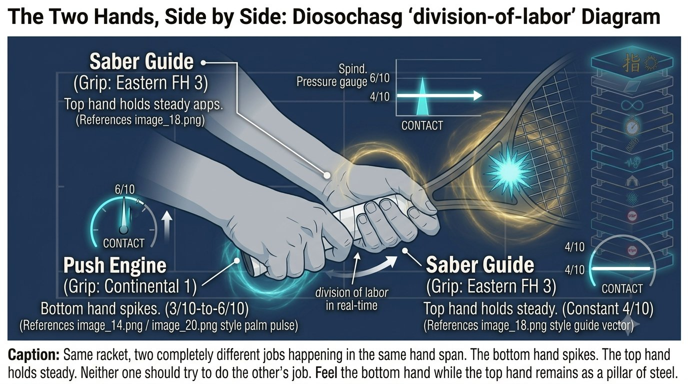

Chapter 21: Two-Handed Backhand Hybrid
(English version of Chapter 21 in the United Tennis Handbook)
CHAPTER 21

Figure 1
TWO-HANDED BACKHAND
Push + Saber Hybrid
The dominant hand pushes like a forehand. The non-dominant hand guides like a saber. Best of both worlds.
The dominant hand is the push engine. The non-dominant hand is the saber guide. Together they cover each other's weaknesses.
— Henry Pham
The Two-Handed Backhand Hybrid Map
The two-handed backhand combines the push forehand's engine with the saber's precision.
Grip Architecture
The bottom hand is the forehand push. The top hand is the saber guide. They have to agree on face angle.
— Henry Pham
The Rule
The bottom hand pushes like a forehand. The top hand guides like a saber. Let them fight each other and the face wobbles.
Load Phase
– Eyes: soft tracking, head moving, VOR on.
– Feet: a wide base, a slightly open stance. The front foot steps slightly across. Both legs go briefly thực — a wide base, a deep root.
– Body: a big unit turn. The non-dominant hand, at the throat of the racket, pulls it back — feel a stretch running from hip to lat to both shoulders.
– Racket: high behind you, edge leading, face slightly closed. The non-dominant hand pulls; the dominant hand simply comes along for the ride.
Coach's Note
The two-handed backhand rewards itself here: the non-dominant hand can pull the racket into a perfect position while the dominant hand just goes along for the ride until contact. Let the non-dominant hand lead the takeback.
Park Phase: at the Bounce
– Head: stops, stays side-on. Chin over the front shoulder — never turning toward the net.
– Eyes: jump to the contact zone — further to the side and slightly higher than on the forehand. Lock. Say "park."
– Proprioception: feel both hands at once — the bottom hand's palm behind the racket (push), the top hand's pinky-side edge leading (saber). Both lines loaded.
Execution: Double-Hand Sync
– Fascia: the hips start forward while the racket still drops — this counter-movement loads both lines.
– The push hand (bottom): the chest fires, the palm pushes through the ball like a forehand. 3/10 up to 6/10.
– The guide hand (top): the lat pulls the elbow down, the edge leads, the face squares at the very last instant. A constant 4/10.
– Sync: the bottom hand pushes through while the top hand guides the edge — they arrive together at contact.
– Brake: the chest brakes side-on, the front foot's root holds. Both hands snap — the bottom pushes, the top guides.
Coach's Note
Let the top hand take over and you get a slice. Let the bottom hand take over and you get flat. They have to share the work. Drill: hit two-handed backhands with only the bottom hand, then only the top hand, then both together. Feel each role separately.
Hold Phase
– Eyes and head: still side-on. Chin over the shoulder until the ball crosses the net.
– Finish: both hands finish high, elbows up, chest still sideways. Face the net at the finish and the sync was lost.
Figure 21.2: Four frames, two hands, one sync. Watch the top hand and the bottom hand separately in each frame — they are doing two different jobs the entire time.

Figure 2
The Two-Handed Backhand System Map
Figure 21.1: The push engine plus the saber guide. Bottom hand generates pace, top hand locks the face. Two roles, one stroke.

Figure 3
The Two Hands, Side by Side
Figure 21.4: Bottom hand spikes at contact (3→6/10). Top hand stays steady (4/10). That pressure split — one spikes, one locks — is the whole hybrid.

Figure 4
Fault Signals
Figure 21.3: Four symptoms, four one-line fixes. The push hand and the guide hand each have their own failure modes — this card separates them.
Drills: Integrating the Two Hands
1. Bottom hand only: hit two-handed backhands with only the bottom hand (top hand off the racket). Feel the push engine. 20 balls.
2. Top hand only: hit with only the top hand on the throat of the racket. Feel the saber guide. 20 balls.
3. Alternating: one ball bottom-only, one ball top-only, one ball with both. 30 balls. Feel the roles separate, then merge.
4. Sync drill: a partner feeds high balls. Focus on "bottom pushes, top guides." Say it out loud. 20 balls.
Pre-Point Reset (Two-Handed Version)
1. Feet to ground: wide, both tripods active. Feel the tear between the feet.
2. Head to side-on: chin over the front shoulder, non-dominant hand on the throat.
3. Hands to their roles: bottom is push (3/10), top is guide (a constant 4/10).
The Principle
The two-handed backhand equals the push engine plus the saber guide. The bottom hand provides the pace. The top hand provides the control. They have to arrive at contact together, with shared intention.
The Two-Handed Backhand Checklist
GLUTE. LAT. BOTH HANDS. HEAD SIDE-ON. EYES PARK. PUSH PLUS GUIDE.
– Pre-point: a wide base, both tripods, non-dominant hand on the throat, roles clear.
– Load: a big unit turn, the non-dominant hand pulls the racket back, feel the hip-to-lat stretch on both sides.
– Park: the head stops side-on, chin over the shoulder. Eyes jump to the contact zone 30cm in front and to the side, say "park."
– Execute: the hips start, the bottom hand pushes through, the top hand guides the edge, they arrive together.
– Hold: the eyes and head stay side-on. Chin over the shoulder until the ball crosses the net.
– Balls going wide mean the top hand opened the face. Balls into the net mean the bottom hand didn't push through.
Where This Leads
This chapter integrates Q-V-ROOT-8-45-Impulse-Jin into the two-handed backhand hybrid. Chapter 22 covers the serve. Chapter 23 covers the return of serve. Chapter 24 covers the volley and overhead.